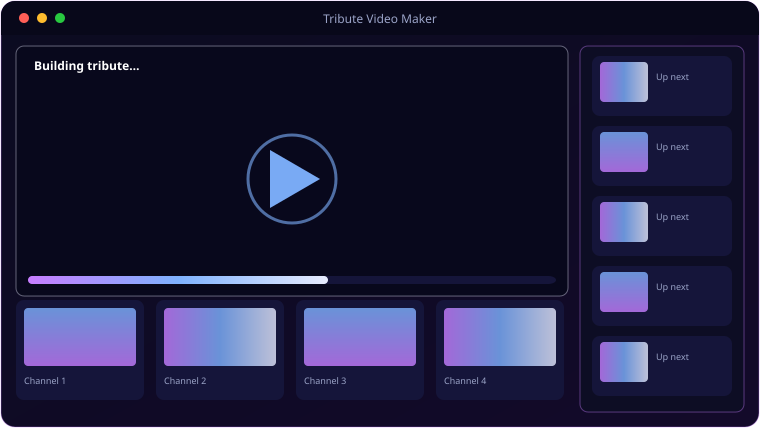

See It In Action
A look inside Tribute Video Maker.

What It Does
Everything Tribute Video Maker brings to the table.
🔎
Finds Your Media
Scans the whole device for images and video, so you don't have to hunt through folders for the right moments.
🎞️
Ken Burns Motion
Every still gets a slow, gentle pan and zoom; video clips are centre-cropped to a clean 1080p frame.
📝
Title & Closing Cards
An opening card sets the dates and a closing card carries your words — written with care and kept tender.
🎵
Your Music
Add an MP3 and the film carries the song that means the most.
📺
Clean 1080p Export
Renders to a single shareable MP4, saved straight to your Desktop.
💜
Made With Respect
Built originally as a memorial for a much-loved dog — the tone stays gentle throughout.
Get Ready
System requirements.
💻
Minimum
- OS: Windows 10 (64-bit) or Windows 11
- CPU: Quad-core, 2.5 GHz
- Memory: 8 GB RAM
- Graphics: OpenGL 3.3 / DirectX 11 GPU
- Storage: 500 MB + space for media
- Display: 1366×768 or higher
🚀
Recommended
- OS: Windows 11 (64-bit)
- CPU: 6-core, 3.5 GHz or better
- Memory: 16 GB RAM
- Graphics: Dedicated GPU for smooth real-time work
- Storage: NVMe SSD with several GB free
- Display: 1920×1080 or higher
Rendering is CPU-bound (moviepy + FFmpeg). Longer films and more clips benefit from more cores and RAM.
Under the Hood
The details.
| Input | Images + video clips scanned from the whole device |
| Stills | Ken Burns pan/zoom |
| Video | Centre-cropped to 1080p |
| Music | Optional MP3 soundtrack |
| Output | 1080p MP4 saved to Desktop |
| Platform | Windows 10 / 11 |
Get Tribute Video Maker.
Turn a lifetime of photos into a gentle memorial film.
⬇ Download Tribute Video MakerTributeVideoMaker_Setup.exe · free · Windows 10/11